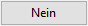
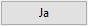

")
Eigenschaften einer vorhandenen Bogenstaffel ändern und Bogenstaffel neu berechnen.
|
Hinweise: |
|
·Nach Eingabe der Verlegebereichslänge wird der wahre Abstand zwischen den Eisen ermittelt. Falls der zulässige Mindestabstand unterschritten wird, werden Sie durch eine Meldung darauf hingewiesen. Ergänzende Hinweise unterstützen Sie bei der Problemlösung. ·Um die Bewehrung abschließend zu übernehmen, muss sie explizit bestätigt werden. Wenn Sie die Bearbeitung unterbrechen, z. B. durch Anklicken eines anderen Programmteils, wird die nicht abgeschlossene Detailzeichnung ggf. gelöscht. Bestätigen Sie die Abfrage mit Ja, um die Detailbearbeitung wieder aufzunehmen. |

1.Bogenstaffel identifizieren
§Klicken Sie die zu ändernde Bogenstaffel an. [Welche Verlegung?].
§Wurde die Bogenstaffel richtig erkannt?
 |
Versuchen Sie es erneut; klicken Sie die gewünschte Bogenstaffel an einer anderen Stelle an, um falsch interpretierte Elemente auszuschließen. |
 |
Der Dialog Eingabe für Bogenstaffel wird geöffnet. |

Eine Verlegung lässt sich nur ändern, wenn sie in einer eigenständigen Positionierung erfasst ist. Ist sie zusammen mit anderen in einer gemeinsamen Positionsnummer erfasst, muss die Verlegung vor dem Ändern zunächst aus der Positionierung extrahiert und als eigenständige Positionierung erfasst werden. Die Verlegung wird dabei aus der ursprünglichen Positionierung "entflochten" und die ursprüngliche Positionierung neu berechnet. §Klicken Sie auf OK, um die Meldung zu bestätigen. Um die Bogenstaffel zu entflechten §Klicken Sie auf . §Klicken Sie die gewünschte Bogenstaffel an. [Welche Verlegung?]. §Wurde die Bogenstaffel richtig erkannt?
Nach Ablegen der Auszüge können Sie die entflochtene Bogenstaffel ändern oder sofort eine weitere Verlegung entflechten. Um die entflochtene Bogenstaffel zu ändern §Klicken Sie auf . §Klicken Sie die entflochtene Bogenstaffel an. [Welche Verlegung?]. §Wurde die Bogenstaffel richtig erkannt?
|
2.Eigenschaften ändern
§Ändern Sie die Eigenschaften im Dialog Eingabe für Bogenstaffel. » Eingabe für Bogenstaffel.
Zum Platzieren der Auszüge (Positionsnummer und -liste) wird ein beweglicher Rahmen mit entsprechendem Platzbedarf angezeigt.
§Setzen Sie den Rahmen per Mausklick an der gewünschten Stelle ab. [Lage Auszug].
Sie können die Anordnung der Auszüge übernehmen (2x rechte Maustaste) oder die Tabelle formatieren und separat absetzen.
§Um die Tabelle zu formatieren oder separat abzusetzen:
-Wählen Sie die Spaltenzahl für die Positionierungstabelle (Anzahl Spalten) und bestätigen Sie die Eingabe. Die Positionierungstabelle wird als beweglicher Rahmen am Cursor angezeigt. -Platzieren Sie die Positionierungstabelle per Mausklick an der gewünschten Stelle (Lage Tabelle) oder bestätigen Sie die aktuelle Lage mit Rechtsklick. |
Nach Abschluss der Platzierung können Sie funktionsabhängig sofort eine weitere Bogenstaffel erzeugen oder ändern.